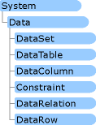

Работа с наборами данных в Visual Studio
Опубликовано: Апрель 2016
Наборы данных представляют собой объекты, содержащие таблицы данных, в которых можно временно хранить данные для их использования в приложении. Если ваше приложение требует работы с данными, можно загрузить их в набор данных. Данные для работы приложения в этом случае будут храниться в локальной памяти. Можно работать с данными в наборе данных, даже если приложение отключается от базы данных. Набор данных хранит информацию об изменениях своих данных. Так что обновления можно отслеживать и отправлять обратно в базу данных, когда ваше приложение вновь подключится к ней.
В следующих разделах содержатся сведения о работе с наборами данных в Visual Studio:
Структура DataSet схожа со структурой реляционной базы данных; она предоставляет собой иерархическую объектную модель таблиц, строк, столбцов, ограничений и связей.
Наборы данных могут быть типизированными или нетипизированными. (Дополнительную информацию см. ниже в разделе "Типизированные и нетипизированные наборы данных".) Типизированные наборы данных получают свою схему (таблицу и структуру столбцов) из файлов XSD и проще программируются. В своих приложениях можно использовать как типизированные, так и нетипизированные наборы данных. Однако для поддержки типизированных наборов данных в Visual Studio предусмотрено больше инструментов, которые упрощают процесс программирования наборов данных и уменьшают вероятность возникновения ошибки.
Создать типизированный набор данных можно, запустив мастер мастер настройки источника данных, или путем добавления элемента DataSet с помощью команды "Добавить новый элемент" в меню "Проект". Дополнительные сведения см. в разделе Практическое руководство. Создание типизированного набора данных.
Создать нетипизированный набор данных можно, перетаскивая элементы объекта DataSet из панели элементов на Windows Forms Designer или Component Designer.
После создания набора данных его можно редактировать в Создание и изменение типизированных наборов данных.
Создавать типизированные и нетипизированные наборы данных и работать с ними можно с помощью следующих разделов .NET Framework пространства имен:

Наборы данных находятся в пространстве имен System.Data
Объекты набора данных доступны разработчику посредством стандартных программных конструкций, таких как свойства и коллекции. Примеры.
Заполнение набора данных
По умолчанию набор данных не содержит данных. Заполнение набора данных фактически означает загрузку данных в отдельные объектыDataTable, составляющие набор данных. Таблицы данных заполняются путем выполнения запросов адаптера таблиц или выполнением команд адаптера данных (например SqlDataAdapter). При заполнении набора данных возникают различные события, проверяются ограничения, и т. д. Дополнительные сведения о загрузке данных в набор данных содержатся в разделе Выборка данных в приложение.
Код для заполнения набора данных автоматически добавляется в обработчик событий загрузки формы при перетаскивании элементов из окно "Источники данных" на форму в приложении Windows. Для получения дополнительных сведений выполните следующий пример: Пошаговое руководство. Отображение данных на форме в приложении Windows.
Пример заполнения набора данных с помощью адаптера таблиц
C#
VB
Me.CustomersTableAdapter.Fill(Me.NorthwindDataSet.Customers)
Заполнять наборы данных можно различными способами:
- Если вы создали набор данных с использованием средств проектирования, например с помощью мастера данных, вызовите метод Fill адаптера таблиц. (Адаптеры таблиц создаются при помощи используемого по умолчанию метода Fill, но у вас есть возможность изменить имя метода, поэтому фактическое имя может быть иным.) Для получения дополнительных сведений см. "Заполнение набора данных с использованием адаптеров таблиц", раздел в Практическое руководство. Заполнение данными набора данных.
- Вызовите метод Fill объекта DataAdapter. Дополнительные сведения см. в разделе Заполнение DataSet из адаптера данных DataAdapter.
- Вручную таблицы набора данных можно заполнить, создавая объекты DataRow и добавляя их в коллекцию таблицы DataRowCollection. (Это можно делать только во время выполнения программы; во время разработки задавать элементы коллекции DataRowCollection нельзя.) Дополнительные сведения см. в разделе Добавление данных в DataTable.
- Считывание XML-документа или потока в набор данных. Дополнительные сведения см. в описании метода ReadXml. Пример см. в разделе Пошаговое руководство. Считывание XML-данных в набор данных.
- Слияние (копирование) содержимое одного набора данных с другим. Данный сценарий полезен тогда, когда приложение получает наборы данных из различных источников (например из различных веб-служб XML), но при этом требуется объединить их в один набор данных. Дополнительные сведения см. в разделе Объединение содержимого DataSet.
- Слияние (копирование) содержимого одной таблицы DataTable с другой.
Сохранение данных из набора данных обратно в базу данных
При внесении изменений в записи набора данных эти изменения должны быть записаны в базу данных. Для записи изменений из набора данных в базу данных необходимо вызвать метод Update адаптера таблицы или адаптера данныхDataAdapter, который выполняет обмен данными между набором данных и соответствующей базой данных.
При использовании средств проектирования работы с данными в Visual Studio пересылайте данные обратно в базу данных с помощью метода Update объекта адаптера таблиц для сохраняемых таблиц данных. Примеры.
C#
VB
CustomersTableAdapter.Update(NorthwindDataSet.Customers)
Для более четкого управления процессом обновления вызовите один из методов DBDirect адаптера таблиц, с помощью которого можно передать отдельные значения для каждой строки данных. Дополнительные сведения см. в разделах Практическое руководство. Обновление данных с помощью адаптера таблицы и Пошаговое руководство. Сохранение данных с помощью методов DBDirect адаптера таблицы.
Класс DataRow, используемый для работы с отдельными записями, содержит свойство RowState, значение которого указывает, была ли изменена строка с момента первой загрузки таблицы из базы данных. Возможные значения — [, F:System.Data.DataRowState.Deleted и](assetId:///, F:System.Data.DataRowState.Deleted и?qualifyHint=False&autoUpgrade=True), Modified, Added, и Unchanged. Методы обновления Update адаптера таблиц и адаптера данных DataAdapter проверяют значение свойства RowState, чтобы определить, какие записи необходимо записать в базу данных и какие конкретно команды указанной базы данных (InsertCommand, UpdateCommand и DeleteCommand) должны вызываться.
Дополнительные сведения об обновлении данных см. в разделе Сохранение данных.
Навигация по записям в наборах данных
Так как наборы данных представляют собой полностью отсоединенные от базы данных контейнеры данных, то они (в отличие от наборов записей ADO) не поддерживают понятие текущей записи. Вместо этого доступны все записи в наборе DataSet в любой момент.
Так как не существует текущей записи, то не существует и специального свойства, которое бы указывало на текущую запись, а также методов и свойств для перемещения от одной записи к другой (см. замечание ниже). Можно осуществлять доступ к отдельным таблицам из набора данных как к объектам; каждая таблица представляет собой коллекцию строк. С ней можно работать как с любой другой коллекцией, т. е. обращаться к строкам с помощью индексов коллекции или операторов, определенных для коллекций в используемом языке программирования.
Например, можно получить четвертую строку таблицы Customers с помощью следующего кода:
C#
VB
TextBox1.Text = NorthwindDataSet.Customers(3).ContactName
LINQ to DataSet
LINQ to DataSet позволяет использовать запрос LINQ (Language-Integrated Query) для данных в объекте DataSet. Дополнительные сведения см. в разделе LINQ to DataSet.
Наборы данных и XML
Набор данных – это реляционное представление данных, которое в свою очередь может быть представлено в виде XML. Тесная связь между наборами данных и XML позволяет получить следующие преимущества:
- Структура набора данных – его таблицы, столбцы, отношения и ограничения – может быть определена в виде схемы XML. Наборы данных могут читать и записывать схемы, хранящие структурированную информацию, с помощью методовReadXmlSchema и WriteXmlSchema. Если нет доступной схемы, набор данных может попробовать получить такую (с помощью своего метода InferXmlSchema) из данных в XML-документе, имеющем реляционную структуру. Дополнительные сведения о схемах XML см. Построение XML-схем.
- Можно создать класс набора данных, включающий в себя информацию о схеме, для определения структуры данных. Такой класс называется типизированным набором данных. Сведения о создании типизированных наборов данных содержатся в разделе Практическое руководство. Создание типизированного набора данных.
- Можно прочесть документ или поток XML в набор данных с помощью метода ReadXml набора данных и записать набор данных в виде XML с помощью метода WriteXml. Так как XML – это стандартный формат обмена данными между приложениями, то это означает, что можно загрузить набор данных XML-форматированными данными, полученными от других приложений. Аналогичным образом набор данных может сохранить свои данные в виде XML-потока или документа для того, чтобы предоставить их другим приложениям для совместного использования, или просто для того, чтобы сохранить данные в стандартном формате.
- Можно создать XML-представление (объект XmlDataDocument) содержимого набора данных или таблиц данных, а затем просматривать и обрабатывать данные, используя как реляционные методы (набора данных), так и методы работы с XML. Оба представления автоматически синхронизируются при их изменении.
Сравнение типизированных и нетипизированных наборов данных
Типизированный набор данных извлекается из базового класса DataSet и затем использует сведения из Конструктора наборов данных, которые хранятся в XSD-файле, для создания нового строго типизированного класса набора данных. Сведения, указанные в схеме (таблицы, столбцы и т. д.), создаются и компилируются в этот новый класс набора данных как набор объектов и свойств первичного класса. Так как типизированные наборы данных наследуются от базового класса DataSet, типизированный класс обладает всеми функциональными возможностями класса DataSet и может использоваться с методами, принимающими экземпляр класса DataSet в качестве параметра.
Нетипизированный набор данных, в отличие от типизированного, не имеет соответствующей встроенной схемы. Как и типизированный набор данных, нетипизированный набор содержит такие структуры, как таблицы, столбцы и др., однако они доступны только как коллекции. (Однако после создания вручную таблиц и других элементов данных нетипизированного набора данных можно экспортировать структуру набора данных в качестве схемы с помощью метода WriteXmlSchema набора данных.)
Доступ к данным в типизированных и нетипизированных наборах данных
Класс для типизированного набора данных имеет объектную модель, в которой его свойства принимают действительные имена таблиц и столбцов. Например, при работе с типизированными наборами данных можно ссылаться на столбцы с помощью следующего кода:
C#
VB
' This accesses the CustomerID column in the first row of the Customers table.
Dim customerIDValue As String = NorthwindDataSet.Customers(0).CustomerID
В то же время при работе с нетипизированным набором данных эквивалентный код будет выглядеть так:
C#
VB
Dim customerIDValue As String =
CType(dataset1.Tables("Customers").Rows(0).Item("CustomerID"), String)
Типизированный доступ не только отличается большей удобочитаемостью, но и полностью поддерживается технологией IntelliSense в Visual Studio Редакторе кода. Помимо того, что с таким кодом проще работать, синтаксис для типизированного набора данных позволяет проверять типы во время компиляции, что существенно уменьшает вероятность ошибок при присвоении значений элементам набора данных. Если изменить имя столбца в DataSet и затем скомпилировать приложение, будет получена ошибка построения. Двойным щелчком клавишей мыши по ошибке построения в Списке задач можно перейти непосредственно к строке(-ам) кода, ссылающейся на старое имя столбца. Кроме того, доступ к таблицам и столбцам в типизированном наборе данных во время выполнения происходит несколько быстрее, так как доступ определяется на этапе компиляции, а не с помощью коллекций во время выполнения.
Хотя типизированные наборы данных обладают рядом преимуществ, во многих случаях целесообразно применять нетипизированные наборы. Самый очевидный сценарий – когда для набора данных нет доступной схемы. Такое может произойти, например, если приложение взаимодействует с компонентом, который возвращает набор данных, но при этом его структура заранее не известна. Иногда приходится работать с данными, не имеющими статической предопределенной структуры; в этом случае работать с типизированным набором данных нецелесообразно, так как приходится заново создавать класс типизированного набора данных при каждом изменении структуры данных.
Довольно часто приходится создавать наборы данных динамически, не имея доступной схемы. В этом случае набор данных является просто удобной структурой, в которой можно хранить данные до тех пор, пока они не будут представлены в виде реляционной структуры. В то же время можно использовать такие дополнительные возможности набора данных, как сериализация данных для передачи их в другой процесс или для сохранения в виде XML-файла.
Зависимость от регистра в наборе данных
По умолчанию имена таблиц и столбцов в наборе данных не зависят от регистра. Это означает, что к таблице Customers в наборе данных можно также обратиться и по имени customers. Такой подход соответствует соглашениям о присвоении имен, принятым во многих СУБД, включая SQL Server, где имена элементов данных не должны отличаться друг от друга только регистром букв.
|
 Примечание Примечание
|
|
В отличие от наборов данных, XML-документы зависят от регистра, следовательно, имена элементов данных, определенные в схемах, также зависят от регистра. Например, протокол схемы позволяет определить одну таблицу как "Customers", а другую таблицу как "customers". Это может привести к конфликту имен, если для создания набора данных используется схема, содержащая элементы, различающиеся только регистром. |
Однако чувствительность к регистру может быть фактором, определяющим способ интерпретации данных в наборе. Например, при фильтрации данных в таблице набора данных критерий поиска может возвращать различные результаты в зависимости от того, учитывается при сравнении регистр или нет. Можно управлять чувствительностью к регистру при фильтрации, поиске и сортировке, устанавливая свойство CaseSensitive набора данных. По умолчанию все таблицы набора данных наследуют это свойство. (Можно переопределить это свойство для каждой отдельной таблицы, установив свойство CaseSensitive таблицы.)
Связанные таблицы и объекты DataRelation
Если в наборе данных имеется несколько таблиц, то данные, содержащиеся в них, могут быть взаимосвязаны. Набор данных не имеет встроенных сведений о таких отношениях, поэтому для работы с данными в связанных таблицах необходимо создать объекты DataRelation, которые описывают отношения между таблицами в наборе данных. Дополнительные сведения см. в разделе Практическое руководство. Получение доступа к записям в связанных объектах DataTable. Объекты DataRelation могут использоваться для программного извлечения дочерних записей для указанной родительской и наоборот. Дополнительные сведения см. в разделе Отношения в наборах данных. Если база данных содержит отношения между двумя и более таблицами, средства разработки автоматически создадут объекты DataRelation.
Пусть, например, данные о клиентах и заказах организованы так, как в базе данных Northwind. Таблица Customers может содержать записи следующего вида:
CustomerID CompanyName City
ALFKI Alfreds Futterkiste Berlin
ANTON Antonio Moreno Taquerias Mexico D.F.
AROUT Around the Horn London
Набор данных может также содержать другую таблицу, содержащую сведения о заказах. В таблице Orders столбец "Идентификатор заказчика" является внешним ключом. Если выбрать лишь несколько столбцов из таблицы Orders, можно получить следующее:
OrderId CustomerID OrderDate
10692 ALFKI 10/03/1997
10702 ALFKI 10/13/1997
10365 ANTON 11/27/1996
10507 ANTON 4/15/1997
Так как каждый клиент может сделать более одного заказа, то связь между клиентами и заказами будет иметь тип "один-ко-многим". Например, в приведенной выше таблице клиент ALFKI имеет два заказа.
Можно использовать объект DataRelation для получения связанных записей из дочерней или родительской таблицы. Например, при работе с записью, описывающей клиента ANTON, можно получить коллекцию записей, описывающих сделанные им заказы. Дополнительные сведения см. в разделе GetChildRows. Аналогичным образом, при работе с дочерней записью, описывающей заказ с кодом 10507, можно с помощью объекта отношения добраться до родительской записи клиента с кодом ANTON. Дополнительные сведения см. в разделе GetParentRow.
Ограничения
Как и в большинстве баз данных, наборы данных поддерживают ограничения в качестве способа обеспечения целостности данных. Ограничения представляют собой правила, применяемые при вставке, обновлении или удалении строк, содержащихся в таблице. Можно определить два типа ограничений:
- Уникальное ограничение: новые значения в столбце должны быть уникальными в пределах таблицы.
- Ограничение внешнего ключа, которое определяет правила обновления дочерних записей в связанной таблице при обновлении или удалении соответствующих записей в основной таблице. Например, ограничение внешнего ключа проверяет существование родительской записи перед разрешением на создание любых дочерних записей.
В наборе данных ограничения ассоциируются с отдельными таблицами (ограничения внешнего ключа) или столбцами (ограничение уникальности, гарантирующее уникальность значений в столбце). Ограничения реализуются как объекты типа UniqueConstraint или ForeignKeyConstraint. Затем они добавляются к коллекции Constraints объекта класса DataTable. Ограничение уникальности можно указать, установив свойство Unique объекта класса DataColumnв true.
Набор данных сам по себе поддерживает свойство EnforceConstraints булева типа, которое указывает, требуется ли выполнять ограничение. По умолчанию для свойства задано значение true. Однако бывают случаи, когда целесообразно временно отключить ограничения. Чаще всего это происходит при изменении записи таким образом, что на некоторое время возникает недопустимое состояние. После того как все изменения будут внесены (следовательно, состояние снова станет допустимым), ограничения можно опять включить.
В Visual Studio ограничения создаются неявно при определении набора данных. При добавлении к набору данных первичного ключа неявно создается ограничение уникальности для столбца первичного ключа. Можно указать уникальное ограничение для других столбцов, установив их свойство Unique в true.
Ограничения по внешнему ключу создаются созданием объекта DataRelation в наборе данных. Объект DataRelation позволяет разработчику не только получать сведения о связанных записях программным путем, но и определять правила ограничений по внешнему ключу.
Расширенные свойства наборов данных
Расширенные свойства предоставляют возможность сопоставления имен при возникновении конфликтов именования в процессе создания набора данных из XSD-файла. Если идентификатор в XSD-файле отличается от имени, созданного генератором набора данных, расширенное свойство добавляется к набору данных в пространстве имен msprop. В следующей таблице показаны возможные расширенные свойства, которые могут быть сгенерированы:
|
Объект. |
Расширенное свойство |
|
DataSet |
msprop:Generator_UserDSName |
|
msprop:Generator_DataSetName |
|
DataTable |
msprop:Generator_UserTableName |
|
msprop:Generator_TablePropName |
|
msprop:Generator_TableVarName |
|
msprop:Generator_TableClassName |
|
msprop:Generator_RowClassName |
|
msprop:Generator_RowEvHandlerName |
|
msprop:Generator_RowEvArgName |
|
DataColumn |
msprop:Generator_UserColumnName |
|
msprop:Generator_ColumnPropNameInTable |
|
msprop:Generator_ColumnPropNameInTable |
|
msprop:Generator_ColumnPropNameInRow |
См. также
Подготовка приложения к получению данных
Общие сведения о приложениях для работы с данными в Visual Studio
Подключение к данным в Visual Studio
Выборка данных в приложение
Привязка элементов управления к данным в Visual Studio
Редактирование данных в приложении
Проверка данных
Сохранение данных